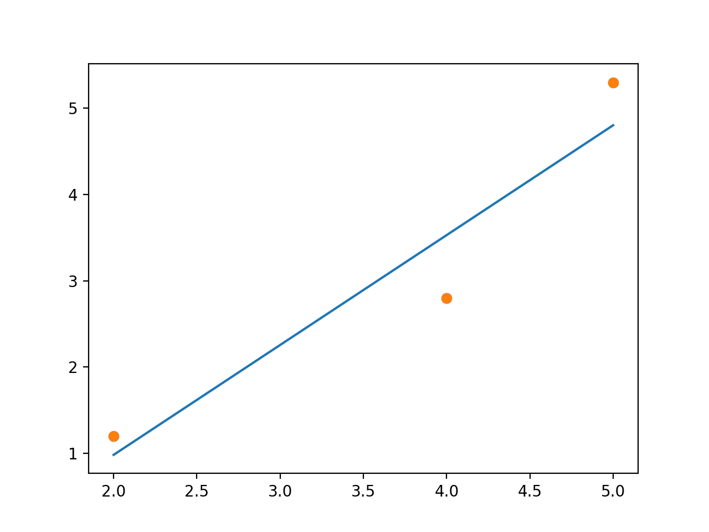

Gradient Descent -- Data Science from Scratch (ch8)
Building gradient descent from the ground up
Table of contents
Overview
In this post, we’ll explore Gradient Descent from the ground up starting conceptually, then using code to build up our intuition brick by brick.
While this post is part of an ongoing series where I document my progress through Data Science from Scratch by Joel Grus, for this post I am drawing on material from Aurélien Geron’s Hands-On Machine Learning to provide a context for why and when gradient descent is used.
NOTE: While gradient descent is introduced as a standalone topic, I find it more intuitive to reason about it within the context of a regression problem.
Setup
I find it helpful to start with an understanding of the context in which gradient descent is used.
We’ll train a linear regression model. Our training data will only have three data points. We train the model by setting up parameters (slope & intercept) that best “fits” the data (i.e., best-fitting line), for example:

We know the values for both x and y, so we can calculate the slope and intercept directly through the normal equation:
# Normal Equation
import numpy as np
import matplotlib.pyplot as plt
x = np.array([2, 4, 5])
y = np.array([45, 85, 105])
# computing Normal Equation
x_b = np.c_[np.ones((3, 1)), x] # add x0 = 1 to each of three instances
theta = np.linalg.inv(x_b.T.dot(x_b)).dot(x_b.T).dot(y)
# array([ 5., 20.])
theta
Our slope is ~20 and intercept is ~5 (theta).
We could also use the LinearRegression class from sklearn to call the least squares function directly:
# Linear Regression
from sklearn.linear_model import LinearRegression
import numpy as np
x = np.array([2, 4, 5])
y = np.array([45, 85, 105])
x = x.reshape(-1, 1) # reshape because sklearn expect 2D array
x_b = np.c_[np.ones((3, 1)), x] # add x0 = 1 to each of three instances
theta, residuals, rank, s = np.linalg.lstsq(x_b, y, rcond=1e-6)
# array([ 5., 20.])
print("theta:", theta)
This appraoch also yields the slope and intercept directly.
Gradient_Descent
Why Gradient Descent?
The normal equation and the least squares (linear regresion) approach can handle large training sets efficiently, but when your model has a large number of features or too many training instances to fit into memory, gradient descent is an often used alternative.
Take_Away
In any modeling process we are “fitting” a model to the data to see which model fits better. A better fit yields better predictions. Models are evaluated by their error (also known as cost function) - the distance between the predicted value and the actual data points.
With linear regression, there are two different ways of training the model. First, is to use an equation that directly computes model parameters to fit the model to the training data (while minimizing errors or ‘cost function’); this is the Normal Equation. Second is to use Gradient Descent.
Gradient Descent is useful you are expecting computational complexity due to the number of features or training instances.
This post is part of an ongoing series where I document my progress through Data Science from Scratch by Joel Grus.

For more content on data science, machine learning, R, Python, SQL and more, find me on Twitter.
Paul Apivat Hanvongse
Self-Employed | Getwyze
My interests include data science, machine learning and R/Python programming.